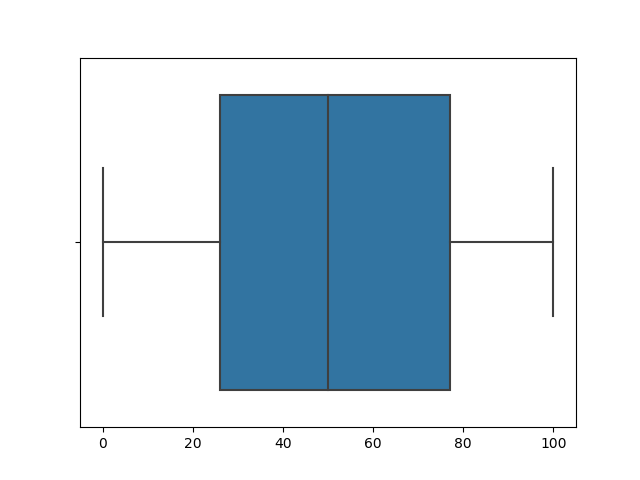

3.1. Boxplot example¶
import pandas as pd
import seaborn as sns
import numpy as np
conds = ['A','B','C','D','E','F','G']
data = [np.random.random_integers(0,100,100).tolist() for cond in conds]
data_df = pd.DataFrame(data)
data_df=data_df.transpose()
data_df.columns = conds
sns.boxplot(data_df)
Total running time of the script: ( 0 minutes 1.236 seconds)